While i missed out classes at the Telstra Creator Space due to illness, i managed to get my induction done as well as play around with Arduino within the Tinkercad space. I worked on projects like the LDR Theremin, No Delay, Push Button, Potentiometer. In replacement of Arduino work i focused more on physical computing research and looking into artists doing cool things within the creative coding universe. Below are my deep dives!
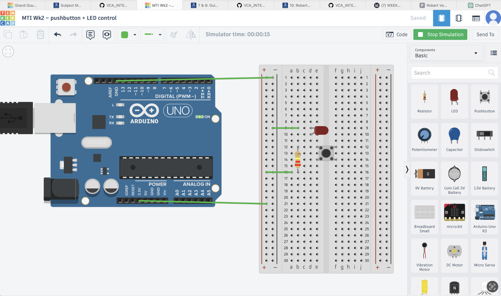
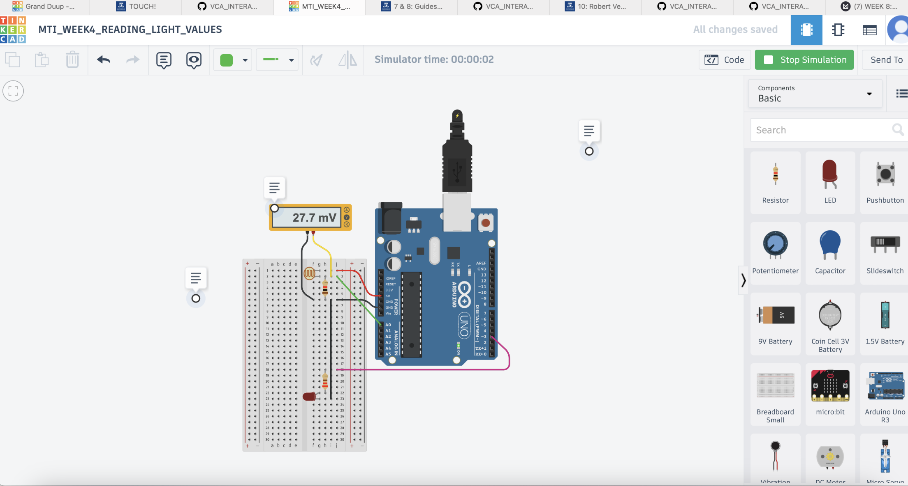
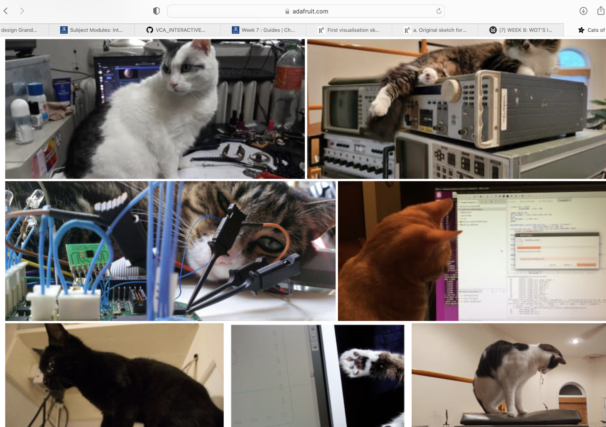
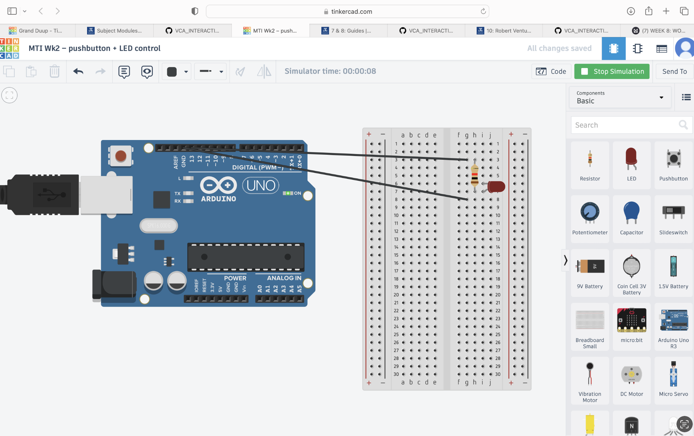
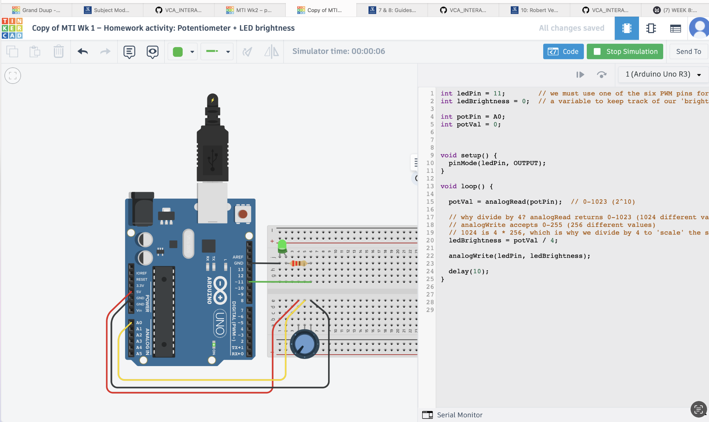
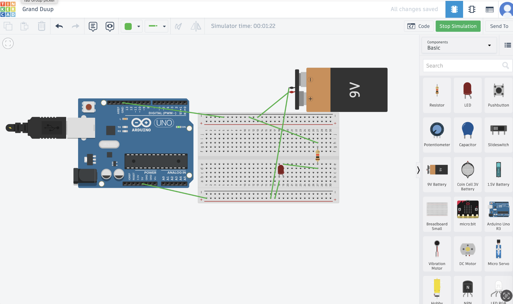
John Maeda: Design by Numbers
- "Design by Numbers" is an influential project by John Maeda that explores the intersection of design and computation. It's an educational initiative aimed at teaching programming to visual artists and designers. Maeda developed a simple programming language and environment that allowed users to create visual compositions through code. - The project emphasised the idea of "computational literacy" and aimed to empower designers with the ability to express themselves creatively through programming. Maeda's work with "Design by Numbers" has had a significant impact on the field of creative coding and has inspired countless artists and designers to explore the possibilities of code as a medium of expression. Additionally, Maeda's TED talks and lectures often touch upon the themes of creativity, technology, and design, providing valuable insights into his work. Practicing what he preaches, Maeda composed Design By Numbers using a computational process he developed specifically for the book. Appropriately, the new language is called DBN (for "design by numbers"). Designed for "visual" people—artists, designers, anyone who likes to pick up a pencil and doodle—DBN has very few commands and consists of elements resembling those of many other languages, such as LISP, LOGO, C/JAVA, and BASIC. - Maeda's work has inspired projects involving sensors, actuators, and microcontrollers to create interactive installations that bridge the digital and physical realms. Throughout the book, Maeda emphasises the importance of understanding the motivation behind computer programming, as well as the many wonders that emerge from well-written programs.
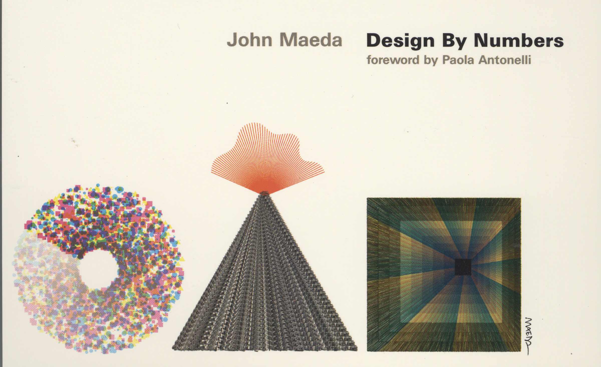
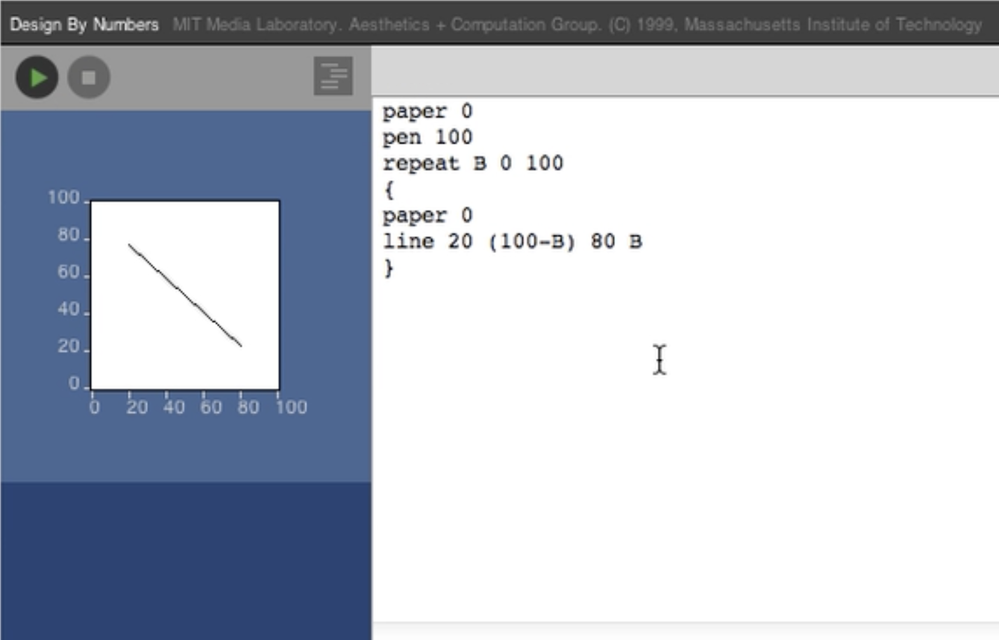
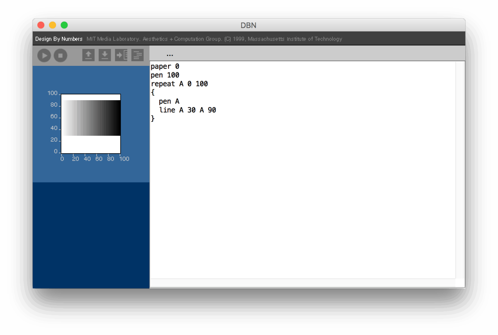
Golan Levin: Augmented Hand Series
- The "Augmented Hand Series" is a collection of interactive installations by Golan Levin that explore the possibilities of augmenting and transforming the human hand through technology. It is a real-time interactive software system that presents playful, dreamlike, and uncanny transformations of its visitors hands. It consists of a box into which the visitor inserts their hand, and a screen which displays their reimagined hand—for example, with an extra finger, or with fingers that move autonomously. Using computer vision and projection mapping techniques, Levin creates immersive experiences where participants can interact with virtual elements overlaid onto their own hands. - One notable installation from the series is "Augmented Hand Series: Eyeball", where a projected eyeball follows the movements of the participant's hand, creating a surreal and playful interaction, inviting participants to engage with their own bodies in new and unexpected ways. - Levin's work with the "Augmented Hand Series" involves sophisticated techniques for tracking hand movements and projecting dynamic visuals onto surfaces. The series serves as a source of inspiration for creative coders interested in exploring the intersection of art, technology, and human-computer interaction.
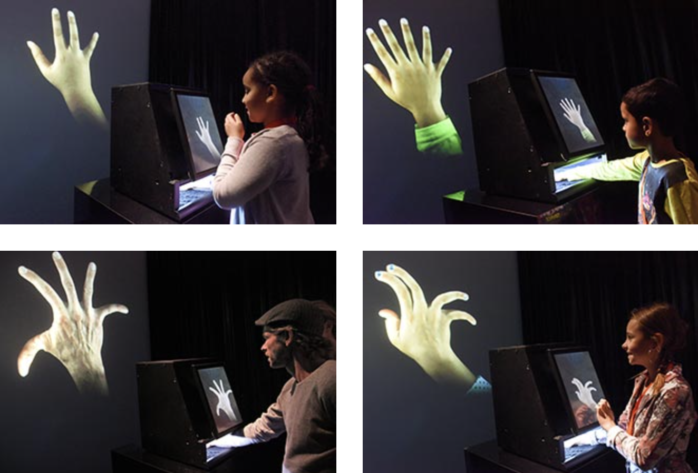
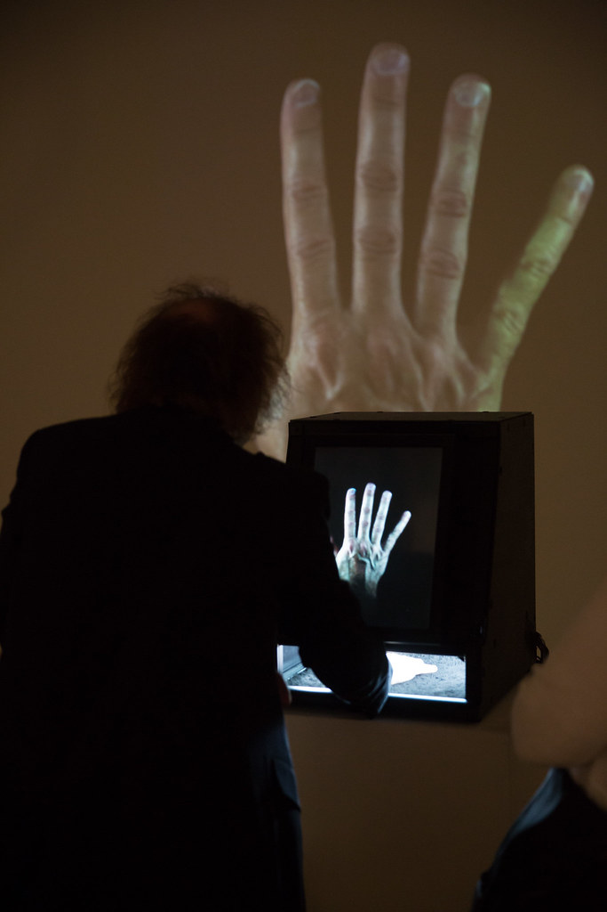
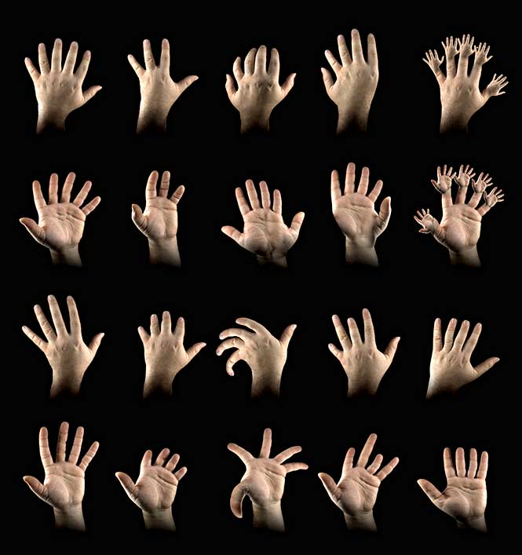
Kimchi and Chips: Light Barrier
- "Light Barrier" is a mesmerizing installation by Kimchi and Chips that explores the properties of light and space through the use of projection mapping and volumetric displays. In "Light Barrier," beams of light intersect and interact with each other, creating intricate patterns and immersive environments. The installation blurs the boundaries between the physical and virtual worlds, inviting participants to explore the play of light and shadow in a tangible space. - Kimchi and Chips' technical documentation and research papers provide insights into the engineering and artistic processes involved in developing installations like "Light Barrier," offering valuable resources for researchers and practitioners interested in the intersection of art, technology, and spatial computing. - Light Barrier explores the properties of light and space through the use of projection mapping and volumetric displays. Woods and Son's project creates mesmerising visual effects by intersecting beams of light in physical space, inviting participants to contemplate the nature of perception and reality. The technical complexity of "Light Barrier" involves precise control of projectors, optics, and computational algorithms to create dynamic visual effects. "Light Barrier" inspires creative coders to experiment with light as a medium of artistic expression, exploring the interplay between physical and virtual environments. Artists draw upon Woods and Son's techniques to create their own immersive installations, experimenting with light, shadow, and motion to evoke emotional responses and create transformative experiences.
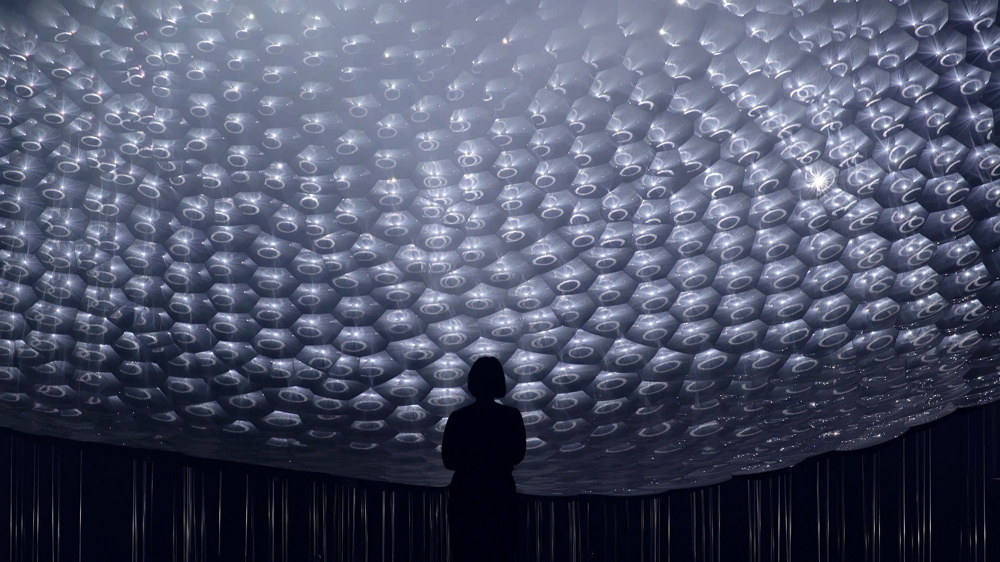

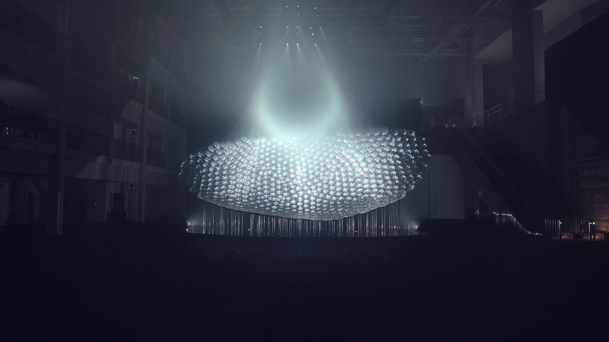
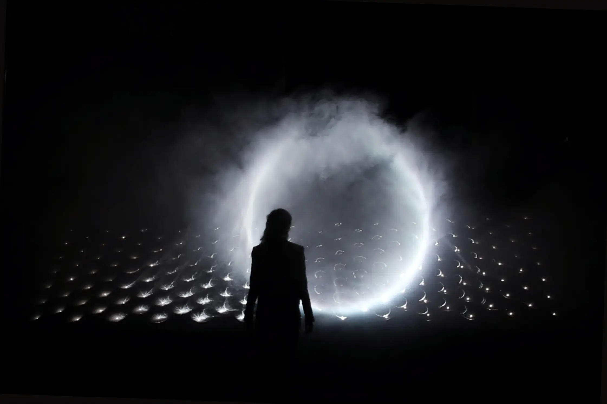
The Journal; My Personal Project
My personal project is a coded journal - based on sound. A speech to text code created on p5 where you would document your day. The purpose of this is to empower one to be more grateful and notice the little happy things in life. Based on your script words are flagged; happy/ positive words are bolded and bigger in size, and bad/ negative words will be shown smaller. Level 1 of my project would be a basic journal entry that would be a speech to text, where the flaged words will be chosen from a sentiment analysis bank of words. Level 2 would be seeing the words transformed into visual shapes and drawings that will allow you to visualise how many happy things happened and how many negative things happened- THIS is to enable more gratitude and allows you to focus on the good. You will eventually start looking more at the good things that happened in your day, rather than focusing on the bad. Here is my work in progress:
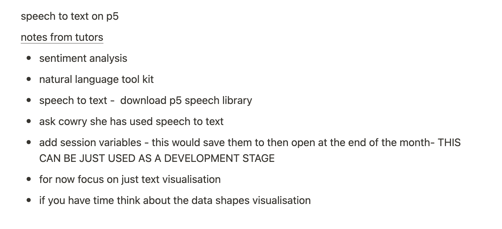
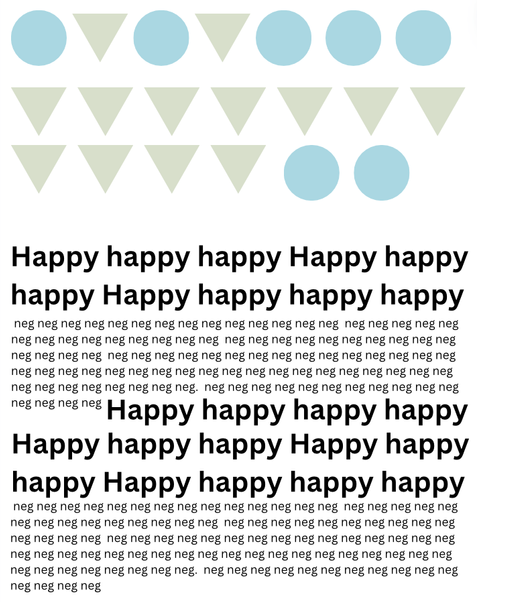
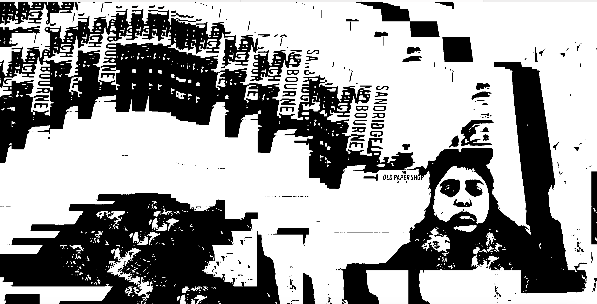
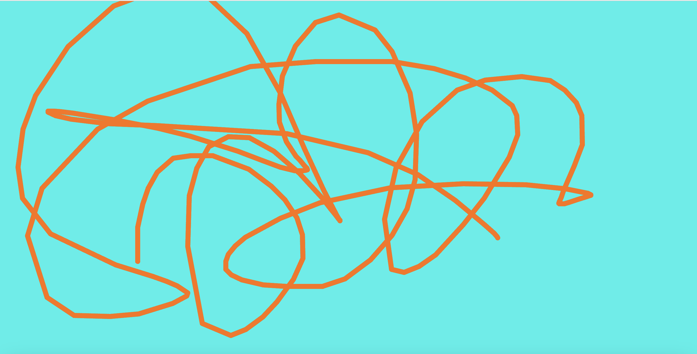
Golan Levin: Augmented Hand Series
- The "Augmented Hand Series" is a collection of interactive installations by Golan Levin that explore the possibilities of augmenting and transforming the human hand through technology. It is a real-time interactive software system that presents playful, dreamlike, and uncanny transformations of its visitors hands. It consists of a box into which the visitor inserts their hand, and a screen which displays their reimagined hand—for example, with an extra finger, or with fingers that move autonomously. Using computer vision and projection mapping techniques, Levin creates immersive experiences where participants can interact with virtual elements overlaid onto their own hands. - One notable installation from the series is "Augmented Hand Series: Eyeball", where a projected eyeball follows the movements of the participant's hand, creating a surreal and playful interaction, inviting participants to engage with their own bodies in new and unexpected ways. - Levin's work with the "Augmented Hand Series" involves sophisticated techniques for tracking hand movements and projecting dynamic visuals onto surfaces. The series serves as a source of inspiration for creative coders interested in exploring the intersection of art, technology, and human-computer interaction.
Golan Levin: Augmented Hand Series
- The "Augmented Hand Series" is a collection of interactive installations by Golan Levin that explore the possibilities of augmenting and transforming the human hand through technology. It is a real-time interactive software system that presents playful, dreamlike, and uncanny transformations of its visitors hands. It consists of a box into which the visitor inserts their hand, and a screen which displays their reimagined hand—for example, with an extra finger, or with fingers that move autonomously. Using computer vision and projection mapping techniques, Levin creates immersive experiences where participants can interact with virtual elements overlaid onto their own hands. - One notable installation from the series is "Augmented Hand Series: Eyeball", where a projected eyeball follows the movements of the participant's hand, creating a surreal and playful interaction, inviting participants to engage with their own bodies in new and unexpected ways.